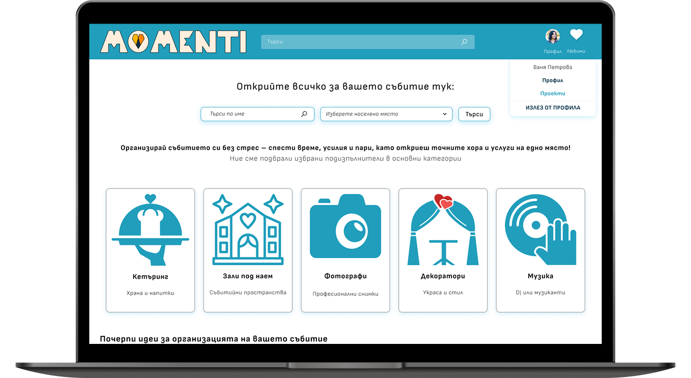
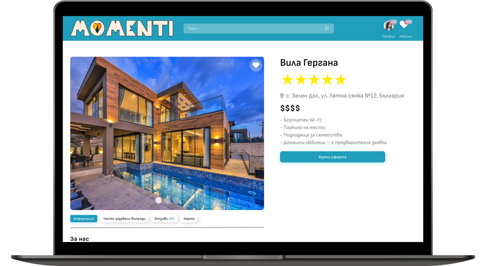
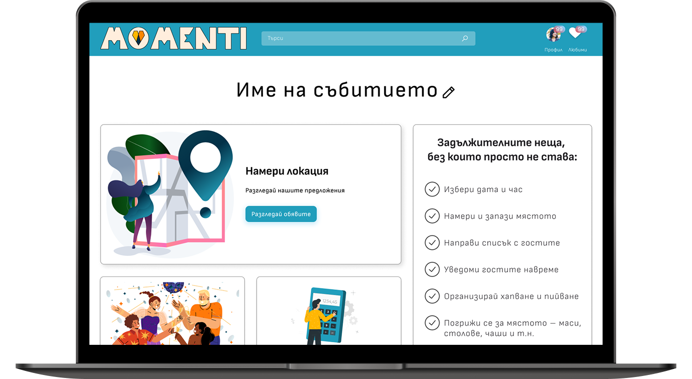
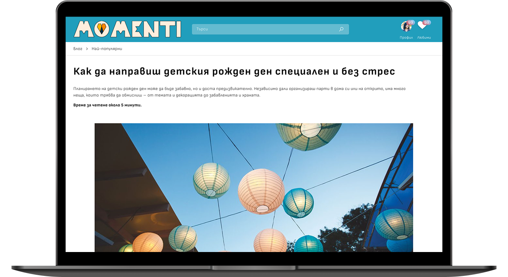
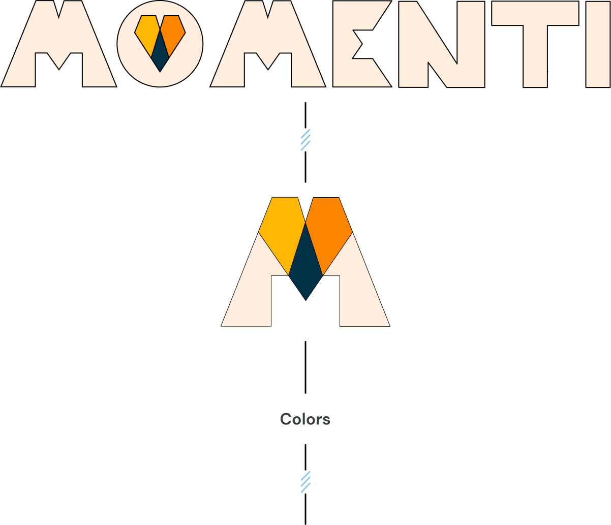

Project summary
Momenti is a web platform designed to help users organize and plan their events. The project aims to provide an intuitive and functional tool, inspired by best practices from leading platforms like Wedding Wire. Momenti offers a modern aesthetic, easy navigation, and a high level of usability, combining personalized features, task lists, and vendor communication — everything needed for a seamless event from start to finish.
My role
Solo designer responsible for the full product vision — from brand identity and business strategy to user experience and visual design.
The problem
Planning and organizing events can be overwhelming and time-consuming, especially when using scattered tools or manual methods. Users often face difficulties managing guest lists, coordinating with vendors, and keeping track of tasks. Existing platforms can feel overly complex or lack personalization, leading to stress and inefficiency. This project aims to address these challenges by offering a centralized, intuitive, and visually appealing tool that streamlines the event planning process and enhances the overall experience for users.
Process
Research > Define > Iterate > Prototype
The solution
Momenti tackles the challenges of event planning by providing a user-friendly web platform designed to simplify and centralize the entire process. Key features include:
- Intuitive Interface:
- Clean and structured navigation makes it easy for users to manage their event timeline, guest list, and to-do tasks with minimal effort.
- Modern Aesthetics:
- A visually appealing design using soft pastel tones and elegant typography to evoke a calm and celebratory atmosphere. The layout is optimized for both desktop and mobile usage.
- Customizable Planning Tools:
- Users can create personalized event plans, set deadlines, assign tasks, and track progress – all in one place.
- Vendor Coordination:
- Built-in tools to discover, contact, and manage vendors such as florists, venues, and photographers directly through the platform.
- Collaboration Features:
- Invite co-hosts, friends, or family to view or contribute to planning, making the process more collaborative and stress-free.
Momenti brings together these elements to offer a seamless, all-in-one event planning experience that’s efficient, enjoyable, and visually refined.
Next – user interviews. To better understand the needs of event planners, I conducted interviews with individuals organizing weddings, birthdays, and corporate events.
The idea behind the interviews was to understand whether there is a real need for a user-centered event planning platform and how effectively current tools address users' expectations.
Event Enthusiasts 🤓
Those who are experienced or frequently involved in organizing events — whether weddings, birthdays, or corporate functions. They are familiar with planning tools, have high expectations for customization and functionality, and seek structured, collaborative solutions to stay on top of every detail.
Casual Planners 😵
Users who rarely plan events and are unfamiliar with digital planning tools. They often rely on word-of-mouth, social media inspiration, or intuition. These users can feel overwhelmed by complex platforms and need a guided, easy-to-use experience that helps them stay organized without stress.
of course, there are people in the middle...
Based on the user flows, I’ve created a new prototype covering the base functionality. It is currently under user testing - the goal is to improve the usability of the flows and to better the step process for the UX.




Bonus: Branding

Primary
Warning
Error